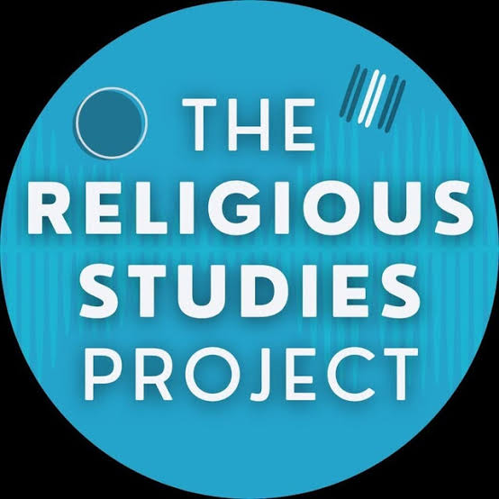
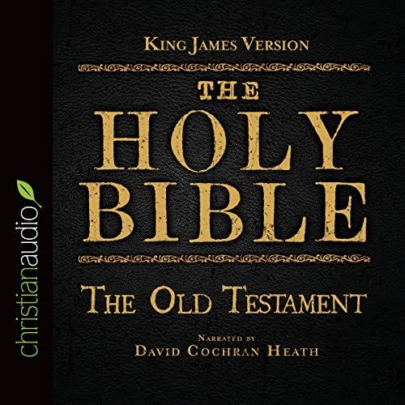
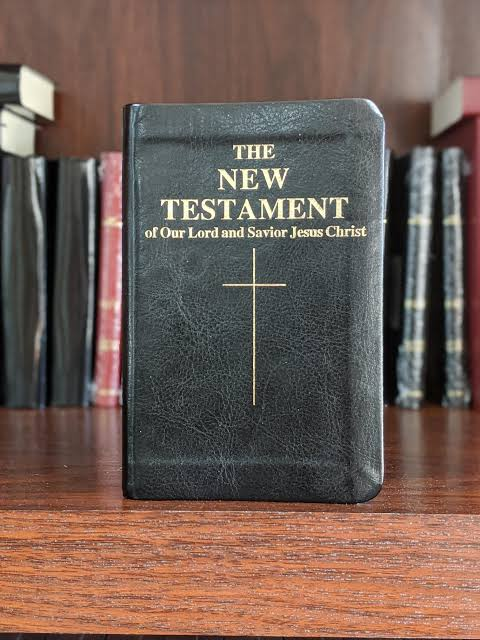
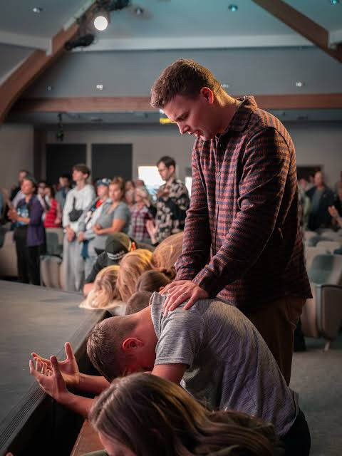

Christian Religious Studies helps learners explore scripture, develop moral character, understand religious practice, and apply Christian values in daily life and society.
Christian Religious Studies (CRS) is a subject that explores the history, teachings, values, and beliefs of Christianity. It examines the life of Jesus Christ, the writings of the Bible, Christian doctrine, and the role of faith in individual lives and communities. In CRS, learners study how Christian teachings shape moral choices, relationships, and social responsibility.
CRS teaches students to see faith as a guide for personal conduct, community service, and peaceful living.
This subject also explains important Christian celebrations, rites, and symbols, allowing students to appreciate the spiritual heritage of their communities. Through CRS, learners develop the ability to reflect on the meaning of life, forgiveness, justice, and love from a Christian perspective.
Biblical Knowledge is a core part of CRS. It involves reading, understanding, and interpreting the Bible. The Bible is divided into two main parts: the Old Testament and the New Testament. The Old Testament covers creation, the history of Israel, the law, prophets, and wisdom literature. The New Testament focuses on the life of Jesus Christ, the work of the apostles, and the early church.
Biblical knowledge provides the foundation for Christian beliefs, values, and spiritual growth.
Understanding Bible stories helps learners recognize key themes such as covenant, redemption, grace, and salvation. It also teaches important lessons through the lives of Biblical characters like Abraham, Moses, David, Mary, and Paul. CRS encourages students to read the Bible thoughtfully and relate its lessons to their own lives.
The Old Testament contains 39 books that describe God's work from creation through the period before the coming of Jesus. It includes the Pentateuch, historical books, poetry and wisdom literature, and prophetic books. Students learn about creation, the fall, the flood, the exodus of the Israelites from Egypt, the giving of the law, the establishment of the kingdom of Israel, and the calls of prophets to repentance.

The Old Testament reveals God's covenant with humanity and teaches obedience, justice, and faithfulness.
Important Old Testament themes include God's promise to Abraham, the liberation of the Israelites, the struggle for justice, and the hope of God's kingdom. Students also reflect on how the laws and stories of the Old Testament provide moral guidance for today.
The New Testament begins with four Gospels that tell the story of Jesus' life, teaching, death, and resurrection. It then includes the Acts of the Apostles, letters to early Christian communities, and the Book of Revelation. New Testament studies focus on the message of Jesus, the birth of the church, the work of Paul, and the call to Christian discipleship.

Students explore the Beatitudes, parables, miracles, and the meaning of Jesus' death and resurrection. They also study the growth of the early church, the letters of Paul, and the ways early Christians lived out their faith in community. This section emphasizes the importance of grace, faith, and mission.
The New Testament shows how Jesus' life and teachings change lives and create a community of love, forgiveness, and hope.
Religious practices include prayer, worship, communion, baptism, fasting, and celebration of Christian holidays. Worship can be private or communal and helps believers express devotion to God. CRS explores the meaning and importance of these practices, showing how they strengthen faith and build community.

Students learn the biblical foundation for Christian worship and the symbolism behind rituals such as the Lord's Supper and baptism. They also consider the significance of festivals like Christmas and Easter, and how faith is expressed in praise, confession, and service.
Worship expresses gratitude, surrender, and trust in God, while religious practices shape daily life and community values.
Faith and morality are central themes in CRS. Faith is trust in God and obedience to His will. Morality refers to right and wrong behavior based on biblical teachings. CRS teaches that faith should result in moral living, loving others, seeking justice, and demonstrating forgiveness and compassion.
Students examine Christian virtues such as love, patience, kindness, humility, and self-control. They learn how to apply the Ten Commandments, the Golden Rule, and Jesus' teaching to everyday decisions. CRS encourages moral reflection and the practice of right behavior at home, school, and in society.
True faith shows itself in loving actions, honest choices, and concern for the welfare of others.
Christian teaching includes the life and teachings of Jesus, the commandments, parables, and apostolic instruction. These teachings provide a moral framework for personal conduct, relationships, and community life. Values such as honesty, respect, generosity, and stewardship are emphasized throughout CRS.
Students study parables like the Good Samaritan and the Prodigal Son to understand mercy and forgiveness. They also examine teachings on leadership, humility, stewardship of creation, and the call to care for the poor and marginalized. CRS fosters a vision of life that honors God and benefits the community.
Christian values shape a life of service, integrity, and responsibility to others.
Christianity influences law, education, health, and social justice in many societies. CRS looks at how Christian beliefs shape attitudes toward peace, human rights, family life, and community development. It also examines the role of the church in promoting unity, providing social services, and advocating for justice.
Students explore the church's role in education, health care, charity, and conflict resolution. They also study how Christian leaders and movements have worked for independence, equality, and peace. CRS emphasizes the importance of applying faith in practical ways to improve society.
Christianity calls believers to serve society through compassion, justice, and a commitment to human dignity.
Religious education teaches learners to respect religious diversity, practice tolerance, and participate responsibly in community life. Citizenship in CRS means understanding rights and duties as members of society while living out Christian principles of love, justice, and service. This section links faith with civic responsibility and ethical leadership.
Students discuss how Christian values support honest leadership, community service, and respect for laws. They learn the importance of volunteering, defending the vulnerable, and contributing positively to national life. CRS prepares learners to be both faithful Christians and responsible citizens.
Religious education equips young people to be faithful citizens who work for peace, fairness, and the common good.